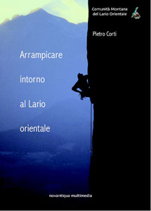
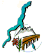
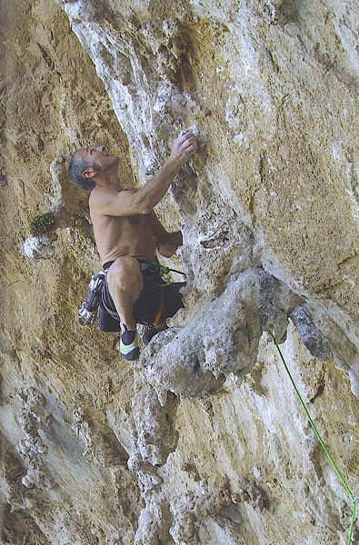
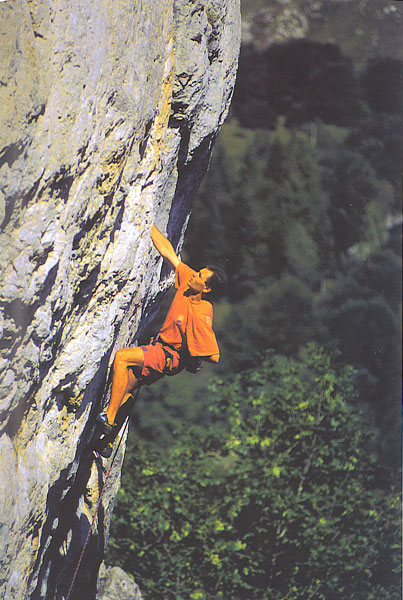
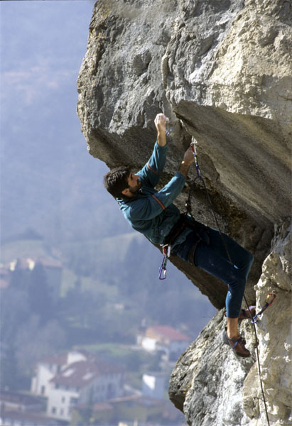

|
ARRAMPICARE
INTORNO AL LARIO
Versione
stampabile
|

|
 Comunità
Montana del Lario Orientale
ARRAMPICARE
INTORNO AL LARIO ORIENTALE
Di Pietro Corti
Dedicato a tutti i
chiodatori
Novantiqua multimedia,
Maggio 2008
Collana Natura&Storia
Itinerari di natura e
storia nella Comunità
Montana del Lario Orientale
Distribuzione a cura
della
Comunità Montana del Lario
Orientale
|
|
Riportiamo
di seguito il CAPITOLO UNO, l’intervista a Marco Ballerini
e Stefano Alippi, ed un inedito testo di Paolo Vitali.
Capitolo uno
Sulle
montagne
lecchesi l’escursionismo è praticato fin dalla metà dell’800
ed è tutt’ora l’attività “outdoor” più popolare; nel
1900 arriva l’arrampicata sulle guglie della Grigna Meridionale, dando
vita ad una vivace storia alpinistica che ha portato grande prestigio
alla
città.
L’arrampicata
sportiva è invece storia relativamente recente, a partire dal 1980,
ma ha coinvolto progressivamente un tale numero di appassionati da
diventare
uno dei fenomeni più importanti nel territorio. Questo grazie alla
ricchezza di strutture di facile accesso ed ottima roccia, ed
all’impegno
di un numero relativamente ristretto di chiodatori che a titolo di
volontariato
hanno attrezzato centinaia di itinerari apprezzatissimi.
Ci
sono stati
anche notevoli interventi svolti da professionisti su commissione di
Enti
(Comune di Introbio per il Sasso di Introbio – Zucco dell’Angelone e
Comunità
Montana del Lario Orientale per le vie della Grigna Meridionale e della
Corna di Medale), col risultato di creare un’imponente offerta per
tutti
i gusti e capacità.
Questo
libro
intende presentare le migliori falesie della Provincia di Lecco,
inserendole
in un percorso storico e descrivendone il contesto ambientale
attraverso
le immagini. Qualche indicazione anche alle proposte “alternative”,
indicando
nelle cartine degli accessi stradali i principali sentieri
escursionistici
o le ferrate.
Non
vogliamo
però fare una guida in senso classico: qui troverete solo una
presentazione
schematica delle aree trattate senza relazioni né schizzi. Il progetto
si completa infatti con la pubblicazione in internet delle informazioni
tecniche (disegni delle strutture e degli itinerari, nomi, gradi di
difficoltà
e commenti sintetici), aprendo il ventaglio alle vie sportive in parete
attrezzate a fix e resinati, alle nuove falesie che nasceranno ed a
quelle
che dovessero venire riattrezzate.
La
nostra
vera guida sarà quindi “on line” e “free”, e potrà interagire
in tempo reale con quanto avviene nel mondo verticale lecchese,
utilizzando
il WEB per un’informazione veloce ed efficace che ci permetterà
di integrare di volta in volta il pacchetto con altre informazioni
utili
e novità. Tutto questo nel sito LARIOCLIMB,
gestito dall’alpinista lecchese Paolo Vitali con la collaborazione di
Sonja
Brambati, Pietro Corti, Vittorio Mantegazza e di Giorgio De Capitani
per
le gallerie fotografiche.
La
Comunità
Montana del Lario Orientale, attraverso il suo presidente Cesare
Perego,
si è interessata a questa idea, sensibile come sempre alla divulgazione
delle numerosissime possibilità di fruizione turistica delle nostre
montagne.
L’era del Bàllera...
L’inizio
dell’arrampicata
sportiva a Lecco
 La
storia dell’arrampicata sportiva nel lecchese è cominciata intorno
ai primi anni ‘80, sulla scia di quanto stava accadendo già da qualche
tempo in Italia e nel resto d’Europa.
Era
appena
trascorso un decennio di radicale cambiamento, assai combattuto e
movimentato,
che aveva messo in discussione molti valori tradizionali. Era nato il
Nuovo
Mattino, cavalcando l’onda del free climbing, e poi era tramontato,
aprendo
la strada ad una nuova stagione. Da noi tutto inizia intorno ad un
personaggio
chiave, scalatore appassionato ed anticonformista, sempre con le
antenne
alzate pronte a cogliere tutto quanto di nuovo veleggiava nell’aria
sopra
il mondo verticale.
Sto
parlando
di Marco Ballerini detto Bàllera, classe 1957, che dalle Guglie
delle Grigne e le grandi pareti alpine, passando per la Patagonia e
l’Himalaya,
è riuscito a percorrere la lunga strada fino al decimo grado.
In
seguito
tanti altri hanno messo le mani sulle rocce intorno a Lecco, lasciando
tracce profonde, ma lui ha avuto la ventura di essere il primo, ed è
a lui che mi sono rivolto.
Per
me è
stato facile, conosco Marco fin dagli inizi della sua carriera, e gran
parte di questa storia avrei potuto scriverla anche da solo. Tuttavia
ho
preferito farlo parlare, scegliendo per questa chiacchierata l’ambiente
della palestra indoor della Comunità Montana del Lario Orientale
a Lecco; tanto poi sapevo che al termine gli sarebbe venuta voglia di
sgranchirsi
un po’ su questi pannelli iperstrapiombanti…
(Pietro)
La storia dell’alpinismo lecchese è davvero lunga, piena di personaggi
di prestigio che hanno lasciato il segno su tutte le montagne del
mondo.
Si conoscono forse un po’ meno le vicende legate all’arrampicata
sportiva
nel nostro territorio. In fondo quello che è cominciato nei primi
anni ’80 è già “storia”; ne è passato di tempo… purtroppo.
(Bàllera)
Perchè “purtroppo”? E’ vero, di tempo ne è passato, ma oggi
ho ancora una gran voglia di scalare.
Anch’io…
Intendevo dire che comunque abbiamo raggiunto anche noi una certa età.
Già;
eppure, magari perché sono un po’ rincoglionito, io questa cosa
la vivo bene.
Meglio!
Allora spremiti le meningi, perché vorrei farti raccontare, da
protagonista,
come è nata l’arrampicata sportiva dalle nostre parti. Ho il sospetto
che tu ne sappia qualcosa. Però, per prima cosa una domanda classica:
come hai iniziato a scalare?
Come tutti
gli altri, da alpinista classicissimo. Prima ancora, però,
l’arrampicata
l’ho vissuta ascoltando quelli che scendevano ai Resinelli di ritorno
dalle
loro arrampicate in Grigna.
I
miei avevano
un albergo ai Piani dei Resinelli e per me questi personaggi, vedendoli
con gli occhi da bambino, erano dei miti. Sopra tutti Riccardo Cassin,
ma anche tanti altri.
Eri proprio
un “bocia”…
Sì,
andavo alle elementari, e come tutti i bambini ero attratto
dall’avventura.
Questi racconti mi affascinavano moltissimo. Al momento però non
pensavo di darmi a mia volta alla scalata; i miei genitori erano
appassionati
di sci, e non appena ho imparato a reggermi sulle gambe mi hanno messo
sopra ad un paio di sci.
Da
lì
è partita la mia prima passione; mi sono buttato in questo sport
dandomi all’agonismo, e tutto il tempo libero lo dedicavo allo sci. Ma
l’arrampicata ormai mi era entrata nella testa...
Se ricordo
bene, quindi, non hai iniziato prestissimo ad arrampicare.
Infatti: ho
iniziato tardissimo. Ho cominciato a scalare quando la mia carriera di
atleta è terminata a causa di diverse fratture alle gambe. Così,
era il 1975, e avevo appena compiuto 18 anni, sono andato a candidarmi
al corso per diventare maestro di sci, non potendo più gareggiare.
In
quell’occasione
ho conosciuto Adriano Trincavelli di Mandello, il “Moss”, fortissimo
alpinista
che stava frequentando a sua volta il corso, ed era già un personaggio
famoso. Con lui finisco inevitabilmente a parlare di alpinismo e, a
maggio-giugno,
mi porta due o tre volte in Grigna a scalare….
In quel
periodo avevo appena iniziato anch’io (che di anni ne avevo tredici -
quattordici),
ma tu hai puntato da subito alle salite di un certo livello.
Ho fatto un
paio d’anni di apprendistato scalando solo nelle mezze stagioni, perchè
facevo il maestro di sci sia d’inverno che d’estate. Però mentre
insegnavo a Cervinia scoprii che nei dintorni c’erano delle palestrine
di arrampicata, che visitavo di frequente. Nel frattempo ho conosciuto
alcune guide locali: altre storie, altri stimoli… E poi il Cervino,
proprio
sopra la testa.
Ho
deciso
quindi che d’estate non si poteva lavorare e mi sono comprato un
pulmino,
un Bed Ford bianco, e l’estate successiva l’ho passata esclusivamente
ad
arrampicare.
Quindi la
prima estate veramente “cattiva” è stata quella dei tuoi 21 anni.
Sì,
avevo già iniziato ad allenarmi un po’, e ad informarmi su quelle
che potevano essere le salite più interessanti.
Con l’obbiettivo
di ripetere le vie famose e rinomate…
Non mi sono
mai posto degli obbiettivi precisi. Però volevo distinguermi, questo
sì. Fare delle cose difficili, anche perché la mia formazione
sportiva deriva dall’agonismo. Quando ho iniziato con gli sci mi
dicevano:
“qua si parte, là si arriva, e devi andar giù più
forte che puoi”.
Dai
6 ai 17
– 18 anni ho fatto quello, quindi avevo grinta da vendere. Diciamo che
mi sentivo abbastanza competitivo.
A parte
il “Moss”, con chi scalavi a quei tempi? Ragazzi di Lecco?
All’inizio
sì, tra l’altro con gente che oggi non arrampica neanche più,
come il “Cecchino” Bonaiti, ma a Lecco era molto difficile emergere se
non avevi un carattere forte. Tutti questi personaggi, questi grandi
alpinisti…
Infatti
nonostante
fossi già conosciuto, grazie ai miei successi nelle gare, ho avuto
le mie belle difficoltà in un ambiente dove tutti pensavano di essere
i migliori. Tra l’altro anche il mio modo di fare non sempre è stato
visto di buon occhio, ed ho incontrato qualche incomprensione.
Comunque
a
Lecco ho trovato subito ragazzi della mia età con i quali condividere
la mia voglia di scalare, di migliorare. Ricordo un paio di stagioni
molto
intense con l’Antonio Peccati “Briciola” del gruppo Condor: partivamo
col
mio furgone e stavamo in giro intere settimane ripetendo un sacco di
salite.
Poi c’erano il Dario Spreafico “Pepetto”, Norberto Riva “Norbi”, Paolo
Crippa “Cipo”. Con lui ho scalato molto, ed è stato un personaggio
che mi ha dato tantissimo. Amici con cui ho vissuto esperienze anche al
di là dell’arrampicata.
Andavo
spesso
anche con i bergamaschi: Sergio e Marco Dalla Longa, purtroppo tutti e
due morti in incidenti in montagna; Vito Amiconi; Bruno Tassi “Camoss”,
che già era uno scalatorefortissimo, in anticipo sui tempi.
Com’è
successo che sei passato all’arrampicata sportiva? Dalle pareti di
ottocento
metri a quelle di venti?
All’inizio
pensavo solo a “spingere” sulle grandi pareti; le strutture più
piccole, il Nibbio, la Grigna, servivano per allenarsi. Però mi
tenevo aggiornato, informandomi e leggendo tutto quello che mi capitava
per le mani.
Era
facile
intuire cosa stava succedendo. Sentivi Messner che parlava di settimo
grado
e, naturalmente, c’era chi gli “dava addosso”; in Italia infatti
eravamo
ancora inchiodati al concetto di sesto grado e certi discorsi non erano
graditi.
Allora
mi
son detto: andiamo a vedere, perché se questo signore, che in montagna
ne ha fatte di ogni, si permette di dire che c’è qualcosa oltre
il sesto grado, bisogna andare a provarlo. Di arrampicata sportiva
proprio
non se ne parlava…
Con quali
salite ti misuravi in quegli anni?
Già
nel ‘77/’79 avevo ripetuto un bel po’ di grandi classiche in Dolomiti;
le vie del Comici, Cassin, Carlesso, Aste. Quindi mi venne la voglia di
conoscere quelle nuove salite che sembravano essere ancora più
difficili.
Ricordo per esempio la Messner al Grande Muro e Mephisto, sempre al
Sass
d’la Crusc. Talvolta fallivamo, ma poi si ritornava più allenati
e motivati.
Però
l’arrampicata libera non la si intendeva come oggi, in effetti non era
ben chiaro che cosa significasse salire in libera. Non si guardava
tanto
per il sottile, appendendosi ai chiodi per progredire o per riposare.
Queste
vie avevano un impegno globale così elevato, rispetto a tanti vecchi
itinerari considerati estremi, che era già un successo riuscire
a venirne a capo in qualche modo. Rispetto alle classiche, qui c’erano
tratti “obbligati” molto più difficili, sicuramente oltre il sesto
grado.
Comunque
si
scalava tanto, ed eravamo anche piuttosto veloci; nel 1978 io e
Norberto
siamo stati una delle prime cordate a ripetere in giornata il Pilone
Centrale
al Monte Bianco.
Quindi hai
iniziato a girare anche al di fuori delle Alpi.
Nel 1979 sono
stato uno dei primi italiani ad andare in Yosemite. Ci sono andato da
solo
perché il mio compagno qualche giorno prima di partire aveva
disintegrato
l’automobile, che gli era indispensabile per il suo lavoro, e dovette
rimanere
a casa per comprarsene un’altra.
In
Yosemite
ho conosciuto un vero e proprio movimento culturale che non aveva
niente
a che fare con l’alpinismo tradizionale a cui eravamo abituati in
Italia.
Una dimensione del tutto inaspettata.
Avevi in
testa qualche cosa in particolare?
Come al solito
non partii con degli obbiettivi, ma con l’intenzione di capire quello
che
stava succedendo da quelle parti. Si sentivano delle storie
incredibili,
si parlava di settimo grado, di un nuovo modo di scalare. Volevo
confrontarmi…
Le
mie ambizioni
però si sono subito ridimensionate appena mi sono attaccato sulla
roccia della Valle. Sono andato là pensando di essere bravo, avevo
già vinto un “Grignetta d’Oro” ed avevo già ripetuto un sacco
di vie molto difficili nelle Alpi (n.d.a.: il premio annuale “Grignetta
d’Oro” era stato istituito dalla sottosezione di Belledo del C.A.I.
Lecco,
per premiare i giovani lecchesi che si erano particolarmente distinti
con
la loro attività. Il vero premio tuttavia consisteva nel guadagnare
una certa notorietà nell’ambiente, che spesso li facilitava ad entrare
nel prestigioso Gruppo Ragni. Cosa che avvenne puntualmente anche per
Marco
nel 1979, insieme all’amico Norberto Riva).
Eppure
sulle
prime tre o quattro fessure su cui ho messo le mani ho preso subito
delle
sonore “bastonate”. Allora… ho fatto un po’ di viette come potevo.
A proposito
di Yosemite: è stato lì che si sono sperimentati i nuovi
materiali per il “free climbing”, come le scarpette a suola liscia.
Quando
hai iniziato ad usarle?
Non ricordo
proprio. So che ho avuto grandi difficoltà a trovarle, finchè
ma le ha procurate il Valentino Cassin, quello del negozio di Lecco,
figlio
di Riccardo, importandole dalla Francia. Erano le E.B. Super Gratton;
sicuramente
devo averle calzate per la prima volta al Nibbio, la falesia dei Piani
Resinelli.
A proposito
di Francia: so che in quegli anni eri già andato in Verdon, dove
è nata l’arrampicata sportiva in Europa. Cosa hai visto da quelle
parti?
Infatti, in
quel periodo sono andato anche in Verdon con amici bergamaschi:
Agostino
Da Polenza e Sergio dalla Longa. C’erano, forse già in quel primo
viaggio od in seguito, il Raffaele “Lele” Dinoia ed il Sergio Panzeri,
di Lecco.
Dopo
le prime
scalate nelle Gorges, mi convinco del tutto che eravamo rimasti
indietro:
nonostante tutte le nostre salite, nonostante avessi conosciuto ed
arrampicato
con grandissimi alpinisti italiani che rispettavo, era evidente che
nell’arrampicata
pura i francesi avevano una marcia in più.
Li
vedevamo
superare in libera dei passaggi che per noi erano proibitivi; infatti
scalavano
già sul 7a/7b (n.d.a.: VIII/IX grado) mentre in Italia eravamo ancora
fermi a discutere se esistesse o no il settimo grado… Qui mi sa che
abbiamo
perso il treno, mi dicevo, anche se sapevo che in Italia c’era chi,
zitto
zitto, stava già puntando in alto. Come il Maurizio Zanolla “Manolo”.
Quale era
il tuo livello in arrampicata?
Basso, almeno
il mio. Diciamo intorno al 6b. Oltre non andavo; o meglio: ci provavo
ma
senza riuscirci. Eppure secondo me già a quei tempi da noi, intendo
dire a Lecco, c’erano dei grossi potenziali inespressi, come nel caso
di
Sergio Panzeri e Lele Dinoia.
Però
era come se fossero compressi sotto un coperchio che in qualche modo li
bloccava. Avvertivo la sensazione che la mentalità lecchese fosse
limitante, che frenasse cioè quella spinta innovativa che si stava
invece sviluppando in altre zone. Sicuramente quelli che giravano se ne
erano resi conto (non ero il solo a muovermi); i tempi stavano
maturando
in fretta.
E
poi mancava
il terreno di allenamento adatto (n.d.a.: a Lecco non c’erano falesie,
se non i Nibbio, ancora attrezzato con i vecchi chiodi, ed il Sasso di
Introbio anch’esso percorso da brevi vie di stampo classico), per non
parlare
delle nozioni di allenamento “a secco” specifico per l’arrampicata…
Oggi il
6b per molti è una difficoltà da “riscaldamento”.
Certo, sportivamente
parlando adesso il 6b (n.d.a.: VII grado) è una banalità.
Ma ormai si conosce la strada, e non si è più condizionati
come una volta dalla barriera della difficoltà. Se sei in grado
di allenarti nel modo giusto, se hai voglia di fare veramente fatica,
oggi
all’8a (n.d.a.: X grado) ci arrivi in quattro e quattr’otto.
Uno dei
più importanti cambiamenti di mentalità nella nascente arrampicata
sportiva è stata l’importanza di definire con precisione il grado
di difficoltà, grazie anche all’invenzione della nuova “scala
francese”.
Mentre negli anni precedenti questo concetto è sempre stato abbastanza
nebuloso. Tu che valore davi, e dai oggi, al “grado”?
Essendo stato
uno sportivo ho sempre avuto ben presente il valore della prestazione,
il “come” la si porta a termine. Se in gara sali una porta sei
squalificato,
se arrivi un millesimo di secondo dopo vuol dire che sei… secondo.
Quindi
ho imparato presto a conoscere la differenza tra il fare o non fare una
via in libera: le regole erano chiare e c’era poco da discutere. E il
grado,
essendo un metro di paragone, ha la sua importanza.
E’
vero che
all’inizio, quando mi dedicavo esclusivamente alle salite “alpine”, la
questione della valutazione del singolo passaggio la sentivo di meno.
C’erano
anche altri problemi: l’ambiente, la chiodatura, il pericolo. Poi
iniziando
a frequentare ambienti più “rilassanti”, con le prime chiodature
a spit, avevo sperimentato anch’io che si poteva spingere sulla
difficoltà
pura con meno condizionamenti.
Ti ho sentito
spesso sdrammatizzare sulla valutazione delle vie sportive proponendo
una
scala di difficoltà come per le piste da sci: azzurro: facile -
rosso: difficile - nero molto difficile…
Massì…
una provocazione buttata lì. Perché talvolta certe discussioni
esasperate mi annoiano parecchio. Soprattutto quando alla base di una
falesia
senti gente accanirsi sul “+”da mettere o togliere al grado di una
certa
via.
Torniamo
un attimo in Verdon: lì a fine anni ’70 hai visto un nuovo modo
di interpretare l’arrampicata attraverso gli spit. Però in quegli
anni c’erano altre storie, completamente diverse: i Sassisti ed Ivan
Guerini
in Val di Mello, quelli della Valle dell’Orco. E poi Finale, Arco…
Dappertutto
c’era un gran movimento, e molti stavano sperimentando strade
alternative.
La Val di Mello l’ho frequentata scalando con i ragazzi di Sondrio, ed
avevo già iniziato a visitare il finalese.
Poi,
al Monte
Bianco, ho avuto la fortuna di incontrare uno dei più grandi talenti
che abbia mai conosciuto: Marco Bernardi, uno scalatore estremamente
polivalente
che già all’epoca faceva cose allucinanti. Grazie a Marco, torinese,
ho potuto conoscere Gianpiero Motti, Giancarlo Grassi, quelli del
“Mucchio
Selvaggio”… e la Valle Dell’Orco.
Un
altro personaggio-chiave
per me è stato il Marco Pedrini, ticinese, anche lui un fuoriclasse
su ogni terreno, con uno spirito molto positivo. Con lui ho fatto una
delle
prime ripetizioni di “Voiage selon Gulliver al Grand Capucin.
Tutti
questi
contatti mi hanno sicuramente aiutato ad aprire la mente, a toccare con
mano quanto di nuovo stava succedendo. E siccome mi è sempre piaciuto
mettermi in gioco, ho provato a confrontarmi con queste realtà.
(n.d.a.: senza trascurare il grande alpinismo. Negli anni ’80 Marco
Ballerini
partecipa a diverse spedizioni in Patagonia: nell’83 al pilastro Nord
Est
del Murallon con Casimiro Ferrari, Ballerini e Fabio Lenti. Devono però
anticipare il rientro dopo settimane di continuo maltempo; il pilastro
viene risolto in extremis da Casimiro con Paolo Vitali e Carlo Aldè.
Nell’84 un tentativo alla parete Nord Ovest del Piergiorgio; nell’86,
in
occasione del quarantesimo dei Ragni, una via nuova in condizioni
proibitive
alla parete Sud della Torre Centrale del Paine con Norberto Riva, Carlo
Besana, Renato Da Pozzo e Dario Spreafico. E poi qualche viaggio in
Himalaya
ed altre salite nelle Alpi).
Tuttavia,
sono sempre stato attratto anche dall’aspetto “filosofico”
dell’Alpinismo.
Mi interessa capire, oltre che scalare, e sicuramente due personaggi
sono
stati fondamentali per la mia formazione. Uno è stato Alessandro
Gogna e l’altro Aldo Anghileri, ai tempi entrambi alpinisti di grande
notorietà.
Con
loro ho
passato un’infinità di serate a parlare, accorgendomi che avevano
una visione diversa dagli altri, decisamente proiettata in avanti.
Molto
stimolante.
Adesso sì
che è il momento di parlare dell’arrampicata sportiva. In ogni zona
c’è stato qualcuno che ha fatto da apripista, come una sorta di
“pioniere”. A Lecco questo ruolo l’hai avuto tu…
Sì,
è toccato a me. Ma la strada è stata lunga e ci sono arrivato
anche con il contributo di quelli citati prima. Avevano tutti una
marcia
in più e io forse ho messo in pratica il loro pensiero. Ho fatto
un po’ la parte del “manovale”.
Beh, per
modo di dire. E’ vero però che ad un certo punto hai cominciato
a “bucare” in prima persona.
Al rientro
dai miei viaggi ho iniziato a guardarmi in giro. Serviva un nuovo
terreno,
che fosse adatto per scalare su difficoltà superiori, e di conseguenza
ci consentisse di alzare il livello. Ricordo in particolare, a
proposito
di nuovi stimoli, una visita istruttiva sulle torri di arenaria nell’ex
Cecoslovacchia, più o meno nel 1980.
E’
stato un
viaggio “di scambio”, come usava allora con le repubbliche “oltre
cortina”,
organizzato dalla Renata Rossi. Lì ho visto cose incredibili, vie
durissime che i “locals” salivano con delle specie di ciabatte,
proteggendosi
con cordini annodati a mo’ di “nuts”, per non rovinare la roccia, molto
tenera. Le difficoltà erano davvero alte, 7a, forse anche di più,
soprattutto considerando con quel tipo di protezioni da paura, e la
sensazione
era quella che potevi farti davvero molto male. Abbiamo fatto quello
che
potevamo, però è stata un’esperienza molto interessante.
Tornato
a
Lecco, dicevo, ho cominciato a studiare alcune placche di roccia solida
e compatta, a portata di mano, dove non aveva praticamente scalato mai
nessuno. C’erano già delle viette di allenamento qua e là,
magari con i chiodi a pressione, ma niente di più. Così ho
provato a combinare qualcosa al Sasso di Introbio, a sinistra di una
via
del Don Agostino (n.d.a.: il fondatore del Gruppo “Condor” di Lecco).
Sapevo
che non si sarebbe trattato di una “via”, al massimo si poteva
considerare
una breve variante, visto che arrivava alla prima sosta dell’itinerario
già esistente, però decisi lo stesso di calarmi dall’alto
e mettere qualche spit.
E’
nato così
“Oltre il tramonto”…Poi a ruota l’”Incubo motopsichico” sempre al
Sasso,
ed il “Vicolo della Desolazione” su una bella placca di piedi proprio
lì
di fronte, alla Rocca di Baiedo.
Col trapano?
Che sensazioni provavi? In fondo per la nostra zona era una novità
assoluta…
Quale trapano?
Buchi col perforatore a mano e spit da 8 millimetri. Le prime
sensazioni?
Grande fatica, sia per chiodare che per provare a salire in libera… E
qualche
polemica. Questi miei esperimenti all’inizio sono stati molto
criticati.
Se cerchi sulle guide di allora, queste “vie” non venivano nemmeno
citate,
se non marginalmente. Posso anche capirlo.
I
veri obiettivi
di allora erano le prime ascensioni sulle grandi pareti, salendo dal
basso
cercandosi la via, anche a prezzo di rischi elevati. Calandosi e
mettendo
gli spit, sembrava che si profanasse l’alpinismo.Comunque non mi sono
fermato…
Anzi!
In effetti
ricordo alcuni incontri-dibattiti a Lecco, in quegli anni, diciamo
molto
“accesi”. Vabbè… Comunque dall’1981 in avanti è iniziata
l’arrampicata sportiva a Lecco.
Già;
dopo Introbio, con Roberto Crotta, Fiorenzo Magni ed altri amici sono
andato
a chiodare al Nibbio ed al Lago.
Intanto
le difficoltà crescevano…
Sì,
volevamo misurarci con le alte difficoltà, quindi si cercavano le
linee adatte allo scopo. Dall’83 all’84 sono nati i primi tiri di una
certo
livello. “Dormi Martina” a Introbio è sul 7b (1984), “Gli Antenati”
al Nibbio è 7a+ e poi è venuto il Lago dove ho chiodato e
liberato Ambarabà, 7a+, e Bella Otero, 7a+. Quindi è stata
la volta dell’Antimedale dove ho attrezzato “Calypso” e “Cacauettes”,
7a.
Intanto
si
era formata una compagnia di chiodatori piuttosto agguerriti ed il
numero
di queste vie aumentava continuamente.
Alte difficoltà
ma anche molto ingaggio. Negli anni successivi la tendenza
generalizzata
è stata quella di ammorbidire la distanza tra le protezioni,
permettendo
anche agli scalatori più tranquilli di avvicinare questo sport.
All’inizio però erano dolori: prime protezioni altissime e
moschettonaggi
da cardiopalma.
E’ vero. Comunque
da qualche anno nelle falesie di riferimento in Europa, Italia
compresa,
si sta tornando allo stile originale, rivalutando anche l’aspetto
“mentale”
dell’arrampicata sportiva. Personalmente mi motivano di più i tiri
dove non c’è solo il grado da superare. La difficoltà delle
moschettonature, per esempio, fa parte del gioco, ed anche la distanza
fra uno spit e l’altro conta. Altrimenti tanto vale andare a fare le
ferrate…
Secondo me questo è un fattore importante.
Qualche
anno
fa ho chiodato un tiro ai Campelli, Cuore Infranto, 8a+, che mi ha
procurato
un po’ di critiche. Per me invece ha il suo fascino anche per il tipo
di
chiodatura, effettivamente molto “ingaggiosa”.
Lo stesso
vale, immagino, per le vie di più tiri cosiddette “plaisir”…
Certamente.
Per la mia professione di Guida Alpina mi è capitato di ripetere
una marea di vie di questo tipo, al Bianco, al Sempione od in altre
zone
della Svizzera. Divertenti fin che vuoi, ma a me sembrano poco più
che delle filate di spit. Preferisco allora stare in falesia a fare
dieci
tiri uno dopo l’altro; almeno negli “intervalli” mi siedo comodo a
chiacchierare
con gli amici.
Altro
discorso
per certe salite che hanno un impegno globale di tutt’altro tipo;
ricordo
in particolare “Elettroshock” e “Delta Minox” (n.d.a: entrambe nel
Màsino
ed entrambe aperte, tra gli altri, da Norberto Riva).
Chiaro il
concetto. Allora, parlando di “vie”: con le grandi salite hai smesso?
Non proprio.
E’ vero che la maggior parte della mia attività di arrampicatore,
lavoro a parte, è in falesia, ma mi capita ancora di andare “in
parete”. Una delle ultime è stato il Sasso Cavallo. Bel posto!
Tornando
all’arrampicata
sportiva nel lecchese, dopo i primi anni di esperimenti e le prime vie
di una certa difficoltà, è arrivato anche l’8a. I primi tiri
di 8a sono stati Hatupertu in Antimedale, Anche Qui e Slavation al
Nibbio.
Nel frattempo tanti altri si sono messi a chiodare, alzando
contemporaneamente
le difficoltà.
Per
passare
su livelli superiori tuttavia si è dovuti ricorrere spesso allo
“scavo”. Personalmente i tiri troppo scavati non mi esaltano troppo;
d’altronde
le nostre strutture non si prestano molto, a differenza di altre zone,
per creare itinerari al top su appigli tutti naturali.
Già
che parliamo di “top”, qual è il tuo? Ed oggi, a 50 anni, cosa cerchi
nell’arrampicata?
Il mio massimo
è stato l’8b. L’arrampicata però mi piace a prescindere dal
grado in senso stretto; mi è capitato anche recentemente di salire
dei 6c meravigliosi che mi hanno procurato grande piacere per la loro
eleganza.
Scalare
mi
diverte, mi coinvolge, e cerco di visitare posti nuovi, le falesie più
belle. Mi piace anche allenarmi in compagnia, qui in palestra come sui
“blocchi”. Quindi non sono mai stato capace di passare le ore da solo a
trazionare su un trave od a fare delle sedute “scientifiche” al
pannello.
Per me l’arrampicata è un’insieme di sensazioni a 360 gradi, e anche
qui in palestra riesco a trovare una bella dimensione mentre mi alleno
con gli altri ragazzi…
Oggi
come
oggi non mi preoccupo tanto di raggiungere chissà quali risultati,
però mi sento sempre motivato a misurarmi con certe difficoltà.
In queste ultime settimane, in falesia, ho provato quella bella
sensazione
di sentire che stavo facevo la “giusta fatica”, avendo addosso cioè
quel filino di margine che mi ha consentito di divertirmi.
Un filino
di margine… Su che difficoltà?
Nel 2007 ho
realizzato dieci, dodici 8a e tre o quattro 8a+.
Ha beh…
Mica male. A dimostrazione che l’arrampicata può essere uno sport
molto “longevo”. Arriverà però il momento in qui capirai
che stai calando; andrai avanti comunque? Anche sui 6a, i 5c?
Difficilissimo
per me rispondere adesso. Sono uno che si ascolta momento per momento.
Vedremo....
Hai ragione;
domanda inutile.
No, non è
vero. In realtà è una domanda che la maggior parte degli
arrampicatori prima o poi si pone. In ogni caso, ho sempre rispettato
di
più chi fa la “Segantini” con passione (n.d.a.: la Cresta Segantini
è una delle vie più facili – e più belle – della Grignetta,
di II e III grado), piuttosto che quelli che si massacrano per fare il
9a e poi, una volta che lo raggiungono, smettono di colpo perché
non gliene frega più niente. Personalmente, ho sempre vissuto
l’arrampicata
come complemento anche ad altre cose. E’ uno degli aspetti più
importanti,
per me; però non c’è solo quello.
Dai che
siamo in chiusura… Prima una curiosità: quando ti incontro in falesia
sei quasi sempre in compagnia di ragazze, mentre di solito i climber
vanno
in giro a coppie di rudi omaccioni assatanati.
Mah… Con una
donna i discorsi sono più diversificati, piuttosto che con certi
uomini che si rincoglioniscono un po’ troppo per il grado.
“Domandona”
finale. Mi piacerebbe conoscere una tua valutazione su quello che sta
succedendo
nell’arrampicata sportiva, in generale, e nel lecchese in particolare.
In generale
le capacità dei “top climber” hanno raggiunto livelli inimmaginabili.
Molti di loro escono dal mondo delle gare ed in falesia fanno delle
cose
mostruose. La scorsa settimana Patxi Usobiaga si è fatto un 9a+
in pochi tentativi e poi, nella stessa giornata, una 9a. Qualche giorno
dopo sempre lui ha salito un 8c+ a vista! Penso che non sia difficile
capire
dove stia andando l’arrampicata sportiva.
I
veri top
climber sono pochissimi, comunque anche il livello medio si è alzato.
Fino a pochi anni fa quando andavi al Nibbio a scalare alla sera eri
praticamente
da solo; in questi ultimi anni invece c’è gente su quasi tutti i
tiri... E il Nibbio non è mai stato considerato una falesia “facile”.
Per
quanto
riguarda l’arrampicata sportiva lecchese, ho la sensazione che siamo
ancora
un po’ indietro, parlando in generale ovviamente. Lo sperimento anche
qui
in palestra, dove vedo che la maggior parte degli arrampicatori
provengono
da fuori città. Tuttavia ci sono dei giovanissimi di Lecco davvero
bravi, che fanno ben sperare: Claudio Arrigoni, 20 anni, Martina
Frigerio,
16 anni, Simone Riva, 19 anni, figlio del Norbi, Elisa Rota, 17 anni,
Manuela
Valsecchi, 18 anni.
Forse
il problema,
come ho detto all’inizio, deriva proprio dalla nostra storia
alpinistica.
Eppure secondo me questa potrebbe essere invece il nostro punto di
forza,
se solo riuscissimo a far tesoro dell’esperienza dei grandi personaggi
che ci hanno preceduti senza sentirci condizionati.
La seconda
generazione...
Lo
Stefano
Alippi
 Armati
di telecamera e cavalletto si parte per la Brianza alla ricerca della
tana
di Stefano Alippi. L’intenzione è di fare una chiacchierata, anche
con lui, sull’origine dell’arrampicata sportiva nel lecchese. E poi,
perché
no, per parlare più in generale del nostro sport. Paolo, autista
e tecnico videofonico della spedizione, ridacchia divertito…
-Sai,
quando,
ho detto che andavamo ad intervistare l’Alippi, tutti davano per
scontato
che intendessi il Gigi (il papà di Stefano)…
In
effetti,
a Lecco tutti si intendono di montagna e di alpinismo, per esperienza
diretta
o per sentito dire, ma è ancora abbastanza diffusa la convinzione
che la storia dell’alpinismo e dell’arrampicata lecchese abbia
raggiunto
il culmine con il Cerro Torre di Casimiro Ferrari (1974) o poco oltre.
Eppure, quello che è successo dopo è altrettanto importante,
con il passaggio del testimone dalla migliore tradizione del passato
all’arrampicata
di concezione sportiva, che molto spesso ha attinto la spinta proprio
dal
grande alpinismo, o vi ritorna per spostarne il limite un po’ più
avanti.
Ad
un certo
punto infatti la storia ha preso due strade divergenti, due linee che
partono
insieme, si separano per poi incontrarsi ogni tanto. Per stare ad
esempi
relativi al nostro territorio, Marco Ballerini e Norberto Riva hanno
all’attivo
un’attività alpinistica di primissimo ordine, arrivando poi a tirare
le microscopiche tacche sulle falesie.
Altri
hanno
fatto il percorso opposto, come Cristian Brenna che dopo aver macinato
una quantità incredibile di tiri sportivi estremi, si permette di
andare a chiudere il contro (aperto dal Casimiro) sulla parete del
Cerro
Piergiorgio in Patagonia…. Una via prevalentemente in artificiale su
terribili
“expanding flake” lunghe decine di metri, tanto pericolose da non poter
nemmeno pensare di tirarle in libera.
Poi
ci sono
gli scalatori puri, che hanno scelto di vivere la propria ricerca
verticale
esclusivamente (o quasi) sulle vie di arrampicata sportiva, i massi o
le
gare di arrampicata.
E’
questa
la caratteristica del “nostro” Stefano Alippi, che dopo il periodo del
moderno pioniere Ballerini, è diventato uno dei più importanti
protagonisti lecchesi di questa particolare attività, raggiungendo
una grande notorietà. Figlio d’arte, il padre è il Ragno
di Lecco Gigi Alippi, gestore del rifugio omonimo ai Piani dei
Resinelli,
alla partenza del sentiero delle Foppe per il rifugio Rosalba in
Grignetta,
Stefano intraprende un’esperienza autonoma rispetto alla tradizione
famigliare
(e, in senso più largo, lecchese), incidendo profondamente
sull’evoluzione
dell’arrampicata sportiva.
Una
carriera
che gli ha anche aperto le porte del Gruppo Ragni, come primo scalatore
sportivo ad entrare in questo prestigioso sodalizio.
La prima
curiosità è venuta fuori proprio durante il viaggio: qualcuno
si è stupito che volgiamo intervistare Stefano Alippi e non Gigi.
Il fatto di avere un padre molto noto in ambito alpinistico quanto ha
influito
nel tuo approccio all’arrampicata?
In realtà
poco; ho qualche vago ricordo dell’infanzia quando, a cinque o sei
anni,
mio padre mi aveva portato a scalare la Punta Rossi (n.d.a. una guglia
di 15 metri a ridosso della parete NE del Nibbio), ma non ha mai
forzato
perché io arrampicassi.
Poi
sui dodici
anni ho iniziato a seguire, così per gioco, il Matteo Benini. Lui
e Riccardo Gatti passavano molto tempo ai Resinelli quando Matteo
studiava
per la tesi di laurea, ed andavano ad arrampicare nei momenti di pausa.
Andavo con loro solo fino alla base delle pareti della Grignetta, ma
niente
di più.
I
primi passi
in roccia li ho mossi in seguito al Nibbio, sempre con loro, e sempre
al
Nibbio ho conosciuto il Marco Ballerini; intanto però l’arrampicata
stava diventando per me una cosa sempre più importante.
Solo
dopo
questa fase ho fatto qualcosa in montagna con mio padre.
Avevo in
mente la solita domanda “come hai iniziato a scalare?”… Mi hai già
risposto, comunque è una sorpresa sapere che hai cominciato in modo
del tutto casuale, nonostante avessi un papà forte alpinista.
In realtà
è stato un apprendistato molto “compresso”: nel giro di pochi mesi
ho iniziato a scalare con Matteo, poi ho conosciuto il Marco
Ballerinied
il suo entourage: il “Cipo”, Paolo Crippa, il Norberto Riva e gli
altri.
Il terreno d’azione era principalmente il Nibbio.
Quindi hai
saltato a piè pari il classico inizio con la scuola di roccia e
le uscite sulle “normali” delle guglie della Grigna, ed hai subito
messo
le mani su una falesia.
E’ così,
però non fraintendiamo: l’approccio è stato “classico“ lo
stesso. Ho fatto in tempo anch’io a fare le vie del Nibbio con le
staffe,
anche perché a quell’epoca pesavo novantadue chili…
Non dirmi
però che il Ballera ti portava fare lo Spigolo del Nibbio (n.d.a.
una delle poche vie di III e IV della struttura).
Questo no,
ma quando ho iniziato ascalare col Marco ero già “evoluto”. La prima
gavetta l’ho fatta con Paolino Stoppa che allora era già uno forte,
scalava sul 6c/7a. Erano i primi anni ’80, quando sono arrivati anche
il
“Ciusse”, Giuseppe Bonfanti, ed il Massimone, Massimo Colombo.
Era
comunque
il periodo in cui si stava sviluppando l’arrampicata libera e la
mentalità
era già avanti. Così mi sono adeguato in fretta.
C’è
gente che ci ha messo quindici anni.
Sai, la mia
fortuna è stata che andavo lì tutti i giorni, visto che abitavo
ai Resinelli dove il papà gestiva un rifugio. Un po’ trascinandomi,
un po’ facendomi tirare, vista la mia stazza, ho salito le vie
storiche;
io strappandomi su tutto quello che trovavo, mentre gli altri provavano
a passare senza usare i chiodi. Poi ho deciso di perdere peso e sono
calato
di venti chili nel giro di tre-quattro mesi… ritrovandoni a passare dal
V/A1 al 6c senza quasi accorgermene.
Altra
grande
fortuna, come ho già detto, era che stavo partecipando ad un periodo
in rapida evoluzione, ed ero in contatto diretto con gente che stava
sperimentando
un nuovo modo di arrampicare.
Come ci
si rapportava con l’arrampicata libera in quegli anni? Si andava a
scalare
già imponendosi di non usare i chiodi, od era una specie di sfida
casuale?
All’inizio
era più una sfida; quando qualcuno di noi riusciva a passare in
libera, per gli altri era una motivazione in più per provare a loro
volta. Comunque ognuno la viveva a modo suo. Si trattava però anche
di una specie di contrapposizione con il vecchio stile. Sempre in modo
amichevole, intendiamoci.
Ricordo
il
Ballera e il “Tono”, Pierantonio Cassin, che erano sempre “sotto” con
gli
altri che venivano al Nibbio: chi si dannava a non tirare i chiodi era
preso in giro da quelli che invece salivano alla vecchia maniera. Poi
col
Tono abbiamo iniziato a levare i vecchi chiodi per sostituirli con gli
spit… Se ne mettevano un po’ alla volta per non scontrasi troppo con i
classiconi; spesso si provava a liberarle anche con le protezioni
originali.
Ogni tanto qualcuno borbottava un po’, ma alla fine tutte le vie sono
state
richiodate.
Già.
A proposito, chi è stato il primo a salire in libera le “classiche”
Cassin, Boga, Ratti? (n.d.a. le prime vie del Nibbio, aperte negli anni
’30 da Riccardo Cassin, Mario dell’Oro, Vittorio Ratti).
Marco Ballerini,
che nel frattempo aveva chiodato a spit alcuni tiri sui muri fuori
dalle
fessure. Quando sono arrivato io c’era già Astroboy, un bel 6c,
ed il Ballera aveva già salito la fessura Sant’Elia, 7a, proteggendosi
ancora con i chiodi arrugginiti ed i cunei di legno. Anch’io l’ho fatta
con quelle protezioni. Rimanevano ancora da liberare alcune delle
vecchie
vie in artificiale, tra qui la più famosa era la Mc Kinley.
Nel
1986,
in occasione del Quarantesimo dei Ragni, era venuto al Nibbio Heinz
Mariacher,
ed aveva fatto un tentativo proprio su quella via dicendo che sarebbe
stato
possibile farla tutta in libera. Lui era riuscito a passare sul primo
muro;
rimaneva lo strapiombo e la placca finale, ma intanto ci aveva dato un
bello stimolo.
Infatti
abbiamo
cominciato a provare e alla fine ne siamo venuti a capo: 7c.
Restando
al Nibbio, quando hai iniziato a chiodare qualcosa di tuo?
Dopo i primi
tiri del Ballera, Astroboy, BoDerek, Un Coin a Ben, il resto l’ho
chiodato
quasi tutto io, da solo o con il Marco stesso ed il Norberto nel giro
di
un anno, un anno e mezzo. Nel 1989 Andrea Di Bari attrezza Anche Qui, e
subito iniziamo a provarlo.
La
prima “libera”
è toccata a lui, sul primo 8a del Nibbio. Per un soffio questo onore
non è toccato a me… Diciamo che me la sono giocata male perchè,
quando finalmente ero riuscito a superare il “chiave”, mi sono accorto
che non avrei potuto proseguire in catena. Ero così convinto di
dovermi fermare al solito punto, quello più difficile, che non mi
ero portato rinvii a sufficienza! Magari non sarei riuscito lo stesso a
chiudere il tiro; comunque mi sono subito rifatto la stagione
successiva.
Lo spirito
di queste chiodature, immagino, era la ricerca di vie sempre più
difficili.
Sì,
certo. Allora l’obbiettivo era chiodare qualcosa che fosse più
impegnativo
di quanto era stato fatto in precedenza. Così ho individuato una
linea che mi sembrava più dura della Mc Kinley: “Il Pigazzo in
decadenza”,
a destra degli Antenati; 7c+.
“Il
Pigazzo”
sono io, la decadenza è riferita al fatto che si tratta di un tiro
“ricercato”, dove ho scavato un appiglio nella roccia liscia per
collegare
la sequenza di movimenti; probabilmente la prima presa scavata in tutto
il lecchese.
Oltre al
Nibbio c’è stato in contemporanea il periodo della Bastionata del
Lago.
Per forza,
d’estate si andava al Nibbio, mentre d’inverno abbiamo cominciato a
chiodare
al Lago, dove fa decisamente più caldo.
E per quanto
riguarda le altre falesie, fuori dalla nostra zona? Hai iniziato subito
a frequentarle?
Non proprio,
la prima volta che sono uscito dal lecchese, intorno ai diciotto anni,
sono andato ad Arco con il Marco Ballerini ed il Tono. Lì c’erano
Bassi e Manolo; altra gente l’ho conosciuta quando ho iniziato a fare
le
gare di Coppa Italia. E’ stata anche un’occasione per andare poi a casa
loro, conoscendo falesie nuove.
A già:
le gare…
Sono stato
alla seconda edizione di “Sport Roccia”, nel 1986 a Bardonecchia, che è
stata la mia prima gara in assoluto. Era una gara di Coppa del Mondo,
al
cui interno è stata disputata una prova del Campionato Italiano,
vinta
da Bassi.
Come
in quasi
tutte le altre aree d’arrampicata, anche nel lecchese l’evoluzione
dell’arrampicata
sportiva ha preso due direzioni diverse: da un lato quelli che hanno
attrezzato
nuovi itinerari cercando di alzare il livello, dall’altro i chiodatori
di falesie più popolari. Cosa ne pensi?
Per quanto
mi riguarda, ho partecipato alla prima delle due; ma c’erano diverse
situazioni
che ci spingevano in quella direzione: la nuova mentalità che si
stava sviluppando, un terreno praticamente “vergine” dove applicarla,
il
contatto con i più forti scalatori di altre zone, l’allenamento,
le gare.
L’innalzamento
della difficoltà richiedeva però forti stimoli, cioè
posti sempre nuovi, senza i quali sarebbe mancata la motivazione per
progredire.
Così quando in una falesia si esaurivano le possibilità,
si andava a cercarne un’altra. Tuttavia l’arrampicata nel lecchese per
il novanta per cento si svolge su placca verticale. Ho iniziato quindi
una ricerca mirata proprio ad un terreno diverso, quello strapiombante
appunto, attratto dalla prospettiva dell’alta difficoltà.
Da
noi le
strutture veramente strapiombanti sono piuttosto rare, ma in compagnia
di Norberto Riva ne abbiamo trovate due sopra Mandello: Lo Strapiombo e
la Grotta. Non è che siamo comodissime; sono un po’ fuori mano,
per l’ottica sportiva, inoltre c’è voluto un gran lavoro. Per farti
capire: la Grotta di Mandello era conosciuta come Grotta dell’Edera…
Le
tappe sono
state quindi: Nibbio, Bastionata del Lago, Settore Strapiombi sempre al
Lago, Strapiombo e Grotta di Mandello fino ad arrivare al Sasso Alippi
ed agli Scudi di Val Grande, dove è stato fatto di tutto e di più…
(appigli scavati, incollati e via discorrendo).
Per
quanto
riguarda le falesie più facili, comunque, le ho sempre viste di
buon occhio, perché contribuiscono a creare interesse verso
l’arrampicata.
Permettono ad un sacco di gente di avvicinarsi a questo sport; creano
“movimento”,
insomma, da cui prima o poi salta sempre fuori qualcuno che ha voglia
di
impegnarsi davvero e raggiungere i massimi livelli.
Quindi è
una cosa positiva che abbiano convissuto queste due filosofie...
Sicuramente.
Forse l’unica pecca è che nella creazione di alcune delle falesie
più popolari si è cercato di addomesticare troppo quello
che era già relativamente facile, interpretando in maniera un po’
distorta il periodo in cui erano in voga le prese scavate.
Non
ne faccio
una colpa, si è trattato di un momento ben definito. Oggi, che di
siti alla portata di tutti ne esistono a centinaia, per chiodarne uno
nuovo
non ha più senso scavare. Quindici-vent’anni fa si poteva capire,
oggi no; anche per quanto riguarda le alte difficoltà.
Quali sono
stati i tuoi punti di riferimento, i personaggi che ti hanno stimolato
di più, e quali gli itinerari più significativi al tuo attivo?
E poi, cosa intendi per bella arrampicata?
Sicuramente
il Marco Ballerini ed il Cristian Brenna, una persona molto positiva e
motivante. Ho anche molta stima di Gnerro. Ma ce ne sono stati
ovviamente
tanti altri. E poi c’erano i miti... Il mio penso sia stato Tribout,
che
penso sia stato un riferimento per molti di noi.
Per
bella
arrampicata intendo quando la difficoltà è “agreable”, per
dirla alla francese, cioè piacevole, progressiva, senza forzature.
Per fare esempi sul territorio penso agli Antenati al Nibbio, Maracaibo
al Lago, Fotonica a Cornalba. Non sono certo tiri estremi, ma rendono
l’idea.
I
top-tiri
invece sono spesso una sofferenza; ce ne sono anche di belli, e da noi
mi viene in mente System Task o Francesca alla Grotta di Mandello.
La
sofferenza
di per sé non la trovo piacevole… Su Les sindacalist a Cornalba
ho provato decine di volte prima di riuscire, ed ovviamente mi ha dato
soddisfazione, ma per quanto riguarda la bellezza del tiro.. non so…
Molto
forzato, complicato…
Se
penso a
Kalimnos, il fatto che sia considerato uno dei siti di arrampicata
sportiva
tra i più belli è proprio perché la scalata è
“dolce” anche sulle alte difficoltà, non è mai a strappi.
Ci sono tanti settori di Arco con queste caratteristiche. Per quanto
riguarda
Lecco, penso sempre che una delle strutture migliori sia ancora il
Nibbio.
Oggi scali
solo per tuo piacere, è terminato infatti il tuo periodo
”professionale”,
e a quanto mi risulta ancora su livelli molto buoni. Come ti mantieni?
Mah, diciamo
di sì, anche se per quanto riguarda il livello…. Il top l’ho raggiunto
su Les Sindacalist (8c+, qualcuno parla di 9a), poi sono andato in
calando
fin nei dintorni dell’8a.
Mi
alleno
una o due volte alla settimana in palestra a Milano quando esco dal
lavoro,
ed arrampico nel fine settimana. Il livello di base c’è e, anche
se al top non arrivo più, mi interessa scalare su difficoltà
medio-alte senza fare troppa fatica. E’ un compromesso molto piacevole…
Questo però
può essere anche un limite…
No, dipende.
Lo vedo anche con la gente che frequento in palestra a Milano. Bisogna
riuscire a sganciarsi un po’ dagli obbiettivi, nel senso di pensare
alla
scalata come a qualcosa in progressione senza troppe forzature. Se
cominci
a considerare l’arrampicata come uno svago, magari anche nei ritagli di
tempo nel dopolavoro, e trovare soddisfazioni, per esempio, su un 6c
che
non ti obbliga ad una fatica eccessiva per raggiungerlo, va benissimo
lo
stesso.
Lo
vedi proprio
in quelli che frequentano le falesie “facili”: vanno a Galbiate, si
divertono
sui 6a/b/c, poi magari all’interno della giornata provano il 7a… E’ un
bel modo di intendere l’arrampicata, poco frustrante.
Ci
si può
sentire appagati anche nell’andare per la centesima volta nella solita
falesia a fare il solito tiro. Subentrano altre motivazioni, che nel
nostro
sport non sono unicamente il raggiungimento della massima difficoltà.
Personalmente
provo molto piacere tornare in un posto come la Bastionata del Lago,
che
conosco a menadito, con il Tono ed altri amici, anche se in quella
falesia
non ho più tiri da “realizzare”. L’arrampicata per me rappresenta
qualcosa di più….
Il punto di
vista di un chiodatore a 360 gradi
Paolo
Vitali
Fin qui abbiamo
parlato di arrampicata sportiva, intendendo soprattutto quella che si
svolge
in falesia, e nel libro è stato dato ampio spazio anche a
chi ha attrezzato i siti di arrampicata del lecchese.
Paolo
Vitali
compare come chiodatore di un paio di siti, Le Torrette e la Pala del
San
Martino, tuttavia il suo contributo alla storia verticale delle pareti
intorno a Lecco si è rivolto soprattutto all’apertura di vie di
più tiri, dal basso e col trapano.
“Apritori”
si nasce
 Ripensando
allo spirito ed alle motivazioni che mi hanno sempre spinto nella
ricerca
di nuove vie e falesie, mi viene da pensare che: apritori/chiodatori si
nasce!
C’è
un qualcosa “dentro” che spinge alla spasmodica ricerca di novità,
e questo in generale negli aspetti della vita quotidiana così come
nell’arrampicata. E’ così che ti ritrovi a camminare sempre con
la testa per aria, immaginando linee ideali ed estetiche che solcano le
pareti più lisce, e non ti darai pace finchè non ci sarai
passato.... E’ un tarlo, una fobia che ti divora e non ti da pace,
perchè
prima di terminare una delle tante linee immaginate ne avvisti già
altre tre, e la lista dei sogni continua ad allungarsi.
Le
mie prime
esperienze di apertura di vie nuove risalgono ai lontani anni 1982/83,
all’età di 18 anni: “Mary Poppins” alla Corna di Medale; “Pucci
Pucci”, “Quo Vadis” e “La Placca del disoccupato” all’Antimedale; il
“Diedro
Mezzaluna” alla parete di Versasio; “Papillon” alla Punta Centa;
“Chrisys”
ai Torrioni Magnaghi, per finire con l’allora remota e complessa
“Aspes”
al pilastro nord-ovest del Pizzo d’Eghen. Solo “Mary Poppins” e il
“Diedro
Mezzaluna”, richiodate recentemente, hanno resistito agli anni, le
altre
sono state dimenticate o ricoperte da altre vie più o meno nuove
“aperte” a fix, anche dall’alto.
Lo
stile di
apertura di quei primi tempi si rifaceva alla mentalità classica,
salendo le zone lasciate libere dalle vie precedenti, mentre su pareti
e pilastri “vergini” si cercava la linea più debole, usando quasi
esclusivamente protezioni naturali (friend e nut) o chiodi. Solo dove
proprio
non se ne poteva farne a meno si piantava uno spit da 8mm con il
punteruolo
a mano. Lo stesso valeva per le soste.
Ma qualcosa
stava cambiando, gli spit aprivano le porte a nuove, enormi
potenzialità,
ed anche nel lecchese nascevano le prime vie di arrampicata sportiva,
per
il momento solo chiodate dall’alto.
A
fine ’83
anche noi provammo quest’esperienza alla Bastionata di Val Verde, una
compatta
placconata con accesso dai Piani Resinelli. La nostra cultura
alpinistica
si ribellava un po’ al concetto di chiodatura dall’alto, ma l’esigenza
di un disgaggio preventivo della linea individuata, e le difficoltà
per i tempi molto elevate, ci fecero optare per la nuova tecnica.
Questa
parete rappresenta però l’unico episodio di chiodatura dall’alto
della nostra attività; solo nel 2003 la riprendemmo per richiodarla
aggiungendo un paio di vie a lato; questa volta dal basso.
Dalla
fine
del 1984 a tutti gli anni ’90 tralasciai le aperture nel lecchese,
troppo
“preso” dalle nuove ascensioni in Val di Mello ed in Val Masino, e
dalle
spedizioni extraeuropee.
Nel
Masino
trovai il mio terreno ideale: un po’ scarso nella forza pura delle
braccia,
ma dotato di buon equilibrio e self-control, le placche granitiche di
aderenza
o comunque appena sotto la verticale, mi offrirono un vantaggio
rispetto
a molti altri scalatori. Il periodo storico era adatto alla scoperta di
una infinità di cime e pareti dove le linee sulle placche erano
state tralasciate perchè reputate impossibili, ma la nuova tecnica
di aderenza e la chiodatura a spit dal basso cambiava gli
orizzonti!
Ma la mia origine era stata il calcare, ed al calcare feci poi ritorno,
applicando quanto appreso sulle placche della Valle.
Nel
1990 Sonja
ed io ci sposiamo e da allora viviamo a Ballabio, proprio ai
piedi
di una fascia rocciosa alle pendici del Monte Due Mani, l’anno
successivo
cominciammo a ripulire meticolosamente quelle rocce, e la vegetazione
alla
base. Un lavoro improbo, ma che portammo avanti proprio per via della
vicinanza
e comodità. Chiodammo il primo settore ancora con il punteruolo
a mano, ma finalmente nel 1994 ci venne in aiuto un trapano a batteria.
E’ la svolta! Con un lavoro continuo negli anni successivi i monotiri
si
moltiplicano fino a raggiungere il fatidico numero 100: è nata la
falesia delle “Torrette”.
Nello
stesso
1994 allo Zucco di Teral, una parete tanto bella quanto evidente ma
ignorata,
sperimentammo per la prima volta l’apertura dal basso di vie di più
tiri con il trapano: tutta un’altra dimensione. Le vie risultano più
sicure, nonostante le difficoltà complessive ed obbligate molto
superiori.
Nel
’95 è
la volta di “Antiche Tracce” ai Magnaghi, ma l’esperienza non ci appaga
molto. Ritengo riduttiva l’apertura di vie su strutture già sfruttate:
una via nuova su un torrione della Grigna molto famoso, due metri a
sinistra
e tre a destra di altri itinerari preesistenti non può dare nulla
di nuovo, così ci concentriamo nella ricerca di pareti trascurate…
e spesso un po’ più “scomode”.
Nel
’96 una
gran fatica per aprire e ripulire “Altolario” alla Parete Rossa del San
Martino; e nel ’97 “Giochi di potere” al Torrione di Val Farina. Due
grandissime
esperienze e soddisfazioni, che ci fanno però capire l’enorme lavoro
necessario per valorizzare strutture sconosciute nel territorio
lecchese,
dove la roccia in genere necessita un gran lavoro di disgaggio e
pulizia.
Nel
’96 torniamo
in Grigna per aprire “Zerowatt” alla Mongolfiera, e nel ’97 completiamo
il lavoro allo Zucco di Teral. Il 1998 ed il ’99 sono dedicati al bel
calcare
della Corna di Bobbio con “Sindrome verticale” e “Scacco Matto”;
un’altra
struttura poco conosciuta, dove il lavoro di pulizia e “gardeing” è
forse superiore alla fatica dell’apertura!
Ma
è
nel 1999/2000 che ci togliamo la più bella soddisfazione delle nostre
vie nuove nel lecchese al Dente del Lupo. La struttura è un pilastro
nascosto fra gli anfratti della Val Boazzo, tra il Monte Due Mani ed il
Resegone. Sonja ed io vi apriamo ben quattro vie, su bellissimo
calcare,
unico “neo” un avvicinamento con breve zoccolo, che fin’ora ha limitato
molto le ripetizioni. Da un lato ci dispiace che questo “gioiellino”
non
abbia riscosso la meritata popolarità, ma dall’altro siamo sicuri
che, quando ci torniamo, troveremo la massima tranquillità.
Molto
più
successo hanno riscosso le bellissime e comode vie aperte alla
Bastionata
del Lago fra il 2002 ed il 2006: Panoramix, Breva & Tivan,
Chelidonia
Express e Gengis Trip. La struttura è talmente evidente che non
poteva non attirare l’interesse dei climber lariani. Ma forse non è
sempre evidente ai ripetitori l’enorme lavoro di pulizia che si sono
resi
necessari per rendere godibili queste vie!
Ed
è
questo lo spirito che mi auguro prevarrà nel futuro delle aperture,
soprattutto nel lecchese. Durante tutti questi anni, in cui mi sono
dedicato
all’apertura di molte vie nuove, ma anche alla ripetizione di decine di
itinerari sportivi sulle pareti della Svizzera Centrale, sono arrivato
alla convinzione che prima di aprire una via, mi devo mettere
nell’ottica
del ripetitore. Che piacere ci può essere nell’andare a salire un
itinerario tra blocchi instabili, zolle erbose e chiodatura
precaria?
Occorre
quindi
sacrificio e fatica per cercare di lasciare la via nelle migliori
condizioni
e con protezioni affidabili; un lavoro che pochi sono disposti a
sobbarcarsi!
Per
chiudere
la carrellata delle nostre “nuove vie lariane”, nel 2003 saliamo
“L’altra
faccia della Grigna” alla Torre Costanza, una parete già rinomata,
ma con uno spazio “bianco” che ci ha regalato una linea molto bella e
apprezzata
dai ripetitori!
E
che dire
delle falesie? Per la mia generazione la falesia è stata una
conseguenza
dell’alpinismo, all’inizio per allenarsi durante tutto l’anno, e solo
in
seguito come “fine”, per il gusto di misurarsi con la difficoltà
pura senza pericolo! Per le nuove generazioni il trend è l’opposto,
nel senso che tutti o quasi cominciano in palestra, naturale e/o
sintetica,
e poi solo alcuni proseguono con l’alpinismo, o con l’arrampicata ad
alto
livello in parete. Per tutti questi giovani l’arrampicata in falesia
rappresenta
quindi la principale, se non l’unica, meta della propria attività.
Personalmente
ho cominciato tardi ad attrezzare monotiri, e devo dire che è una
attività tanto interessante quanto purtroppo piena di contraddizioni
ed a forte rischio di “estinzione”, almeno per quanto riguarda il
lavoro
di volontariato spinto unicamente dalla passione.
Nel
2004 abbiamo
completato la pulizia e la chiodatura di una nuova falesia alla “Pala
del
San Martino”; palese dimostrazione che ancora oggi esistono belle
strutture,
comode ed evidentissime, che possono regalare grandi soddisfazioni.
Anche
qui un lavoro ciclopico di disgaggio e pulizia, per di più
autofinanziato!
Bisogna
però
dire che al di là della gratificazione personale, nel vedere che
il proprio lavoro viene gradito, i ritorni sono pochi...... In genere,
chi apprezza, arrampica e tace.... mentre è molto più facile
trovare chi critica pur non essendosi mai sporcato le mani per pulire o
chiodare. Il fix messo troppo basso o troppo alto, il ciuffo d’erba che
infastidisce (provare a strapparlo!?...) e via discorrendo.
In
un periodo
in cui, finalmente, alcuni enti hanno finanziano il ripristino di
vecchie
falesie o di itinerari in montagna, spesso mi chiedo che senso possa
avere
spaccarsi le ossa e spendere quattrini per preparare il divertimento di
altri, che per di più non riconoscono il lavoro svolto.
Forse
però
è importante che ci sia ancora l’impegno spontaneo e volontario
di climber visionari che ci regala qualche gioiellino dal carattare
particolare
e unico; altrimenti si rischia, con le riattrezzature professionali,
un’eccessiva
standardizzazione degli itinerari di arrampicata.
Punti
interrogativi
che pesano sullo sviluppo dell’arrampicata sportiva, visto che al
momento
sembra prevalere l’idea degli interventi completamente sovvenzionati!
Naturalmente
questi sono solo dubbi personali, cha magari possono servire ad una
riflessione
per cercare soluzioni per il futuro. Per il momento si continua
così.....
Le
strutture
vergini sono ben lungi dall’essere esaurite, bisogna saperle vedere, e
poi avere la voglia di sacrificarci molto tempo, sia per divertirsi ad
aprire, ma anche per renderle poi “godibili” ai ripetitori! Occhi
aperti!!
Paolo
Vitali.
|